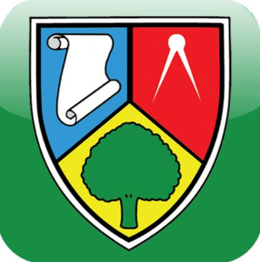

Currently, undertaking BSc Hons. in IT Management
Obtained: BSc in IT Management 2016
Year 2017
Year 2016-2017
Year 2015-2016
Year 2014-2015
Year 2014-2015
Year 2013-2014
Year 2013-2014

Networks and Software Systems FETAC 6 Java, C+, Visual Studio
Comptia +A
PC Maintenance and Servicing FETAC 5
 NHS Management Training Programme:
NHS Management Training Programme: